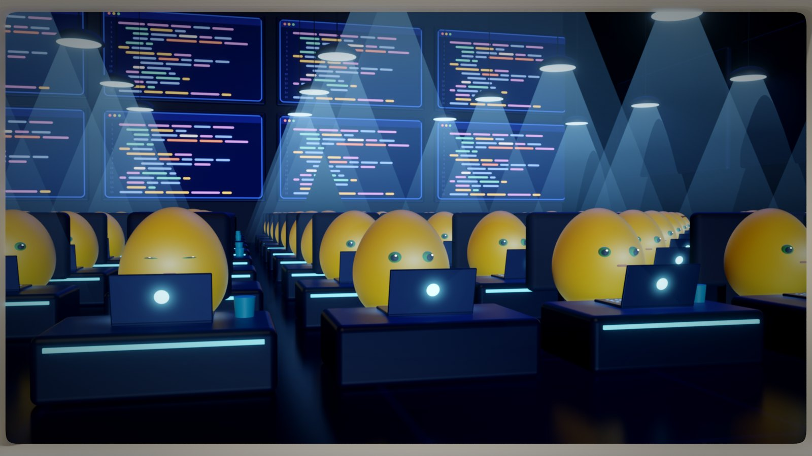
Physical AgentLearning Manipulation in the Native Distribution Retains Reasoning and In-Context Learning
*Equal contribution
TL;DR
We post-trained an open 4B general-purpose agent into a physical agent, on four B200 GPUs and about 1k robot demonstrations. After training it does robot tasks on par with a VLA built from the same model and data, and it is still a general agent: it keeps reasoning, keeps answering questions about images, and learns new tasks from demonstrations placed in its context.
On LIBERO it succeeds in 79.2% of rollouts, level with the VLA-style baseline at 80.0%, and it does better when the instruction changes (23.3% against 15.0%). Its general capabilities stay largely intact: 56.8% on MMLU-Pro against 61.8% before training, and 53.7% on MMMU against 46.8%, where the baseline scores zero on both. The key result is in-context learning. Given one robot demonstration in its context and no parameter update, it succeeds more often: from 44.8% to 56.2% over 21 tasks, and from 17.1% to 31.4% on the hard ones, nearly double. The VLA-style baseline cannot do this. With the same demonstration, its success falls to zero. We never trained for it; the ability is inherited from the general-purpose agent.
79.2% LIBERO
On par with a VLA-style baseline from the same model and data (80.0%).
Still a general agent56.8% MMLU-Pro
61.8% before training. The VLA-style baseline scores 0.
In-context learning+11.4pts
From one demonstration in context, never trained for. The baseline falls to 0%.
Four GPUs4 × B200
Under 50 GPU-hours for a 4B model, from about 1k demonstrations.
1What a physical agent is, and how it works
A general-purpose agent that sees with its own vision, reasons in language, and acts through physical tool calls: native tool calls whose arguments are end-effector targets. It learns physical skills through physical post-training, and remains a general agent.
Compared with a VLA and Code as Policies
pick()
place_on() →
bowl = detect("black bowl")plate = detect("plate")pick(bowl)place_on(bowl, plate)→
Like a VLA, it learns from robot data. Unlike a VLA, its action is a native tool call rather than an added action head, so reasoning, history and in-context learning carry over.
Like Code as Policies, it acts in the model's native interface. Unlike Code as Policies, the model is trained, and it perceives and controls by itself instead of calling perception APIs and a skill library.
Code as Policies: Liang et al., 2023. VLA examples: OpenVLA (Kim et al., 2024) and π0.5 (Black et al., 2025).
The agent loop
The instruction is given once. In each turn the agent receives two camera views, writes a short reasoning paragraph and one tool call, and gets back a tool response that only says the call ran. Whether a grasp held, or the task is done, it has to judge from the next views.
The agent receives
The agent writes
Physical post-training
About 1k demonstrations become 21,267 decisions. Each is a tool call of up to eight targets, with reasoning added by a teacher model.
Instruction and current views in, reasoning and tool call out.
Whole conversations, so each decision also sees the earlier turns.
All parameters are updated, including the vision encoder, with next-token cross-entropy.
2Learning physical skills from a general-purpose agent
Physical Agent performs close to the Qwen4B-OFT baseline on the original tasks, and better under task and position perturbations.
Qwen4B-OFT is the baseline: the same Qwen3.5-4B and the same 1k demonstrations, with a continuous action head instead of tool calls.
Success rate (%)
| Original | Task perturbation | Position perturbation | ||||
|---|---|---|---|---|---|---|
| Suite | Qwen4B-OFTOFT | Physical AgentOurs | Qwen4B-OFTOFT | Physical AgentOurs | Qwen4B-OFTOFT | Physical AgentOurs |
| Spatial | 76.7 | 83.3 | 40.0 | 40.0 | 0.0 | 13.3 |
| Object | 100.0 | 100.0 | 10.0 | 10.0 | 0.0 | 3.3 |
| Goal | 80.0 | 73.3 | 3.3 | 23.3 | 0.0 | 6.7 |
| Long | 63.3 | 60.0 | 6.7 | 20.0 | 0.0 | 0.0 |
| Average | 80.0 | 79.2 | 15.0 | 23.3 | 0.0 | 5.8 |
| Published averages reported by LIBERO-PRO, for context only | ||||||
| π0 (3B) | 92.3 | 0.0 | 0.0 | |||
| π0.5 (3B) | 96.5 | 0.8 | 20.8 | |||
On the original tasks the two are within one point. Under task perturbation, Physical Agent reaches 23.3% against 15.0%, with the gains in Goal and Long. Position perturbation remains hard for both.
3Still a general agent
Two models with the same manipulation score end up very different as general models.
Physical Agent updates every parameter on robot data, with no general-data co-training and no frozen modules, and still answers general questions: 56.8% on MMLU-Pro, down five points from the original model. The action-head model, which keeps its language head, produces no parseable correct answers.
4In-context learning
Language agents pick up a new task from an example in the prompt. We study whether a physical agent can do the same, and find that it can.
Show the agent one demonstration of a task it has not been trained on, and it succeeds more often. We never trained it to do this.
We test on LIBERO-PRO task perturbations, with no parameter updates. A task demo shows the evaluated task from another initial state; a distractor demo shows a different task in the same scene.
What goes into the first turn
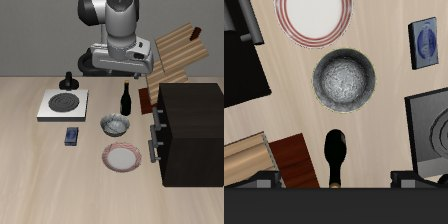
tool call8 targets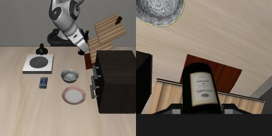
tool call8 targets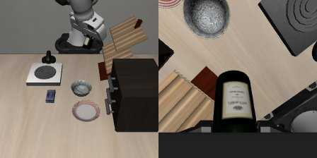
tool call8 targets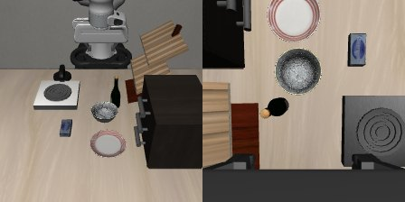
“put the wine bottle in the bowl”Success rate (%)
All 21 tasks105 rollouts per bar
demo
demo
demo
Physical Agent
demo
demo
demo
Qwen4B-OFT
Hard 7 tasks35 rollouts per bar
demo
demo
demo
Physical Agent
demo
demo
demo
Qwen4B-OFT
A task demo helps and a distractor demo hurts. Across all 21 tasks a task demo raises success from 44.8% to 56.2%. A distractor demo lowers it to 36.2%. That 20-point gap between the two shows the agent is reading what the demonstration does, not just benefiting from more context. On the hard subset, a task demo nearly doubles success, from 17.1% to 31.4%.
The action-head model cannot act with the longer context at all. Qwen4B-OFT solves 31.4% of the tasks with no demonstration and essentially none with either kind. It was trained only on current observations; Physical Agent was trained to act on its own history, and a demonstration is just more history in the same format.
“put the wine bottle in the bowl”
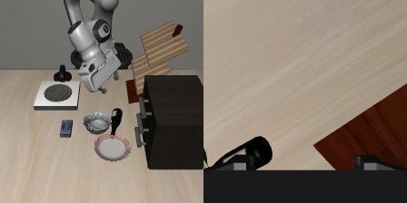
no demo0 / 5never grasps the bottle
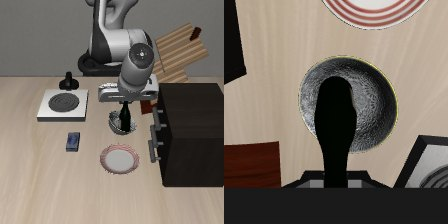
task demo3 / 5bottle in the bowl
“pick the alphabet soup and place it in the basket”
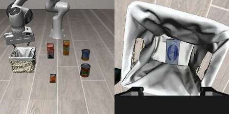
distractor demo0 / 5reaches for the cream cheese
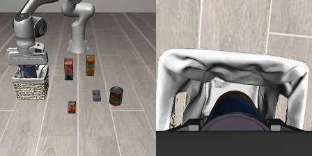
task demo5 / 5soup in the basket
5Four GPUs, a 4B model
We fine-tune a 4B model on four B200 GPUs, in under 50 GPU-hours.
| Physical Agent | Robot-Use RL (PEAR) | |
|---|---|---|
| Starting model | Qwen3.5-4B | Qwen3.8-27B |
| Supervision | About 1k demonstrations | Task success only |
| Training | 16 + 2 epochs of SFT | 340 RL steps |
| Hardware | 4 GPUs | H100, H200 and GB300 nodes |
| GPU-hours | < 50 | ≈ 50,000 |
| LIBERO | 79.2% 120 rollouts | 74.4% 2,000 episodes |
| LIBERO-PRO, task perturbation | 23.3% | 57.4% |
| Real robot | Not evaluated | 60% of 30 trials |
PEAR numbers are quoted from its project page; evaluation protocols differ.
6Reflection and recovery from execution errors
Every demonstration it learned from is a success. Nobody showed it a failed grasp, or what to do after one. In natural rollouts it still recovers from some of its own grasp failures.
Three natural rollouts
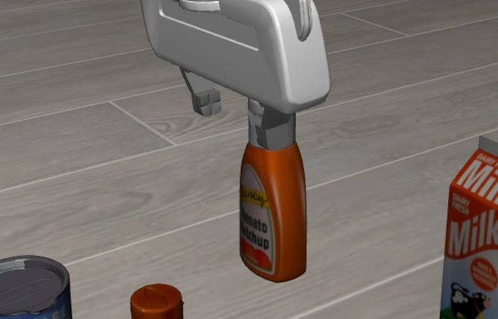
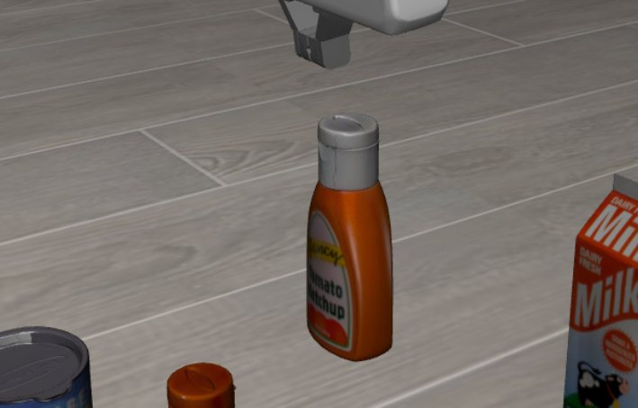
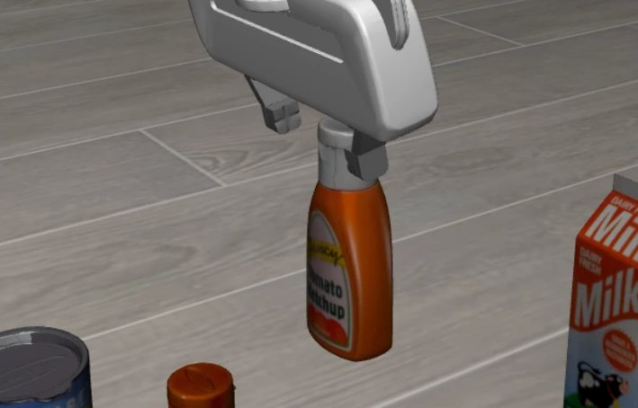
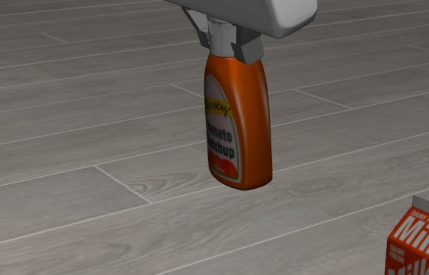
1Attempt- 1
Attemptclose and test the lift
Closes on the bottle and lifts.
- 2
Mismatchmodel reflection
“The previous lift did not give me confirmed grasp evidence …”
- 3
Correctcorrective action
“I open the fingers and lower back toward the target to re-establish a better alignment.”
- 4
Verifyobject follows the gripper
The bottle lifts with the gripper.
15 of 80 rollouts had a failed grasp.
Reflection after the first failure, in 14 of them.
7Limitations and future directions
This is a first version, trained on four GPUs. Here is where it stands today and where we are taking it next.
- Now
- LIBERO and LIBERO-PRO in simulation, with one Franka arm.
- Next
- Real hardware and more embodiments, behind the same tool call.
- Now
- About 1k successful demonstrations and no practice of its own. Perturbed tasks reach 23.3% and shifted positions 5.8%.
- Next
- Large-scale reinforcement learning on the agent's own rollouts.
- Now
- One demonstration in the prompt lifts success from 44.8% to 56.2%, with no parameter update.
- Next
- Context to start RL. Where the zero-shot success rate is zero, reinforcement learning has no signal. A demonstration in context can make it non-zero, and then RL can begin.
- On-policy self-distillation (OPD). The agent with a demonstration in context teaches the same agent without one, on its own rollouts, so what context unlocks ends up in the weights.
- Now
- Every turn writes a paragraph of reasoning and eight targets, one token at a time, which is slower than real-time control.
- Next
- Multi-token prediction. Predict several action tokens in one step instead of one at a time.
- Efficient thinking. It reasons more than it needs to today. Think only when the situation calls for it.
- Epistemic reasoning. Sometimes act first. Test a guess with an action instead of speculating in text, and update beliefs from what happens.
Work with us
Everything on this page was trained on four GPUs. The next step needs many more.
We want to take physical agents from supervised post-training to large-scale reinforcement learning, where the agent improves from its own experience instead of demonstrations. That takes far more compute than we have today: we are short on GPUs.
We are looking for collaborators. If your lab is at a U.S. university and you work on robot learning, agents or large-scale RL, or you have GPU capacity to put behind this direction, we would like to hear from you.
Contact: ryan91@gatech.edu
BibTeX
@misc{xu2026physicalagent,
title = {{Physical Agent}: Learning Manipulation in the Native Distribution
Retains Reasoning and In-Context Learning},
author = {Xu, Junxiao and Yan, Rui and Zhao, Ye},
year = {2026},
howpublished = {\url{the address of this page}},
note = {Project website}
}